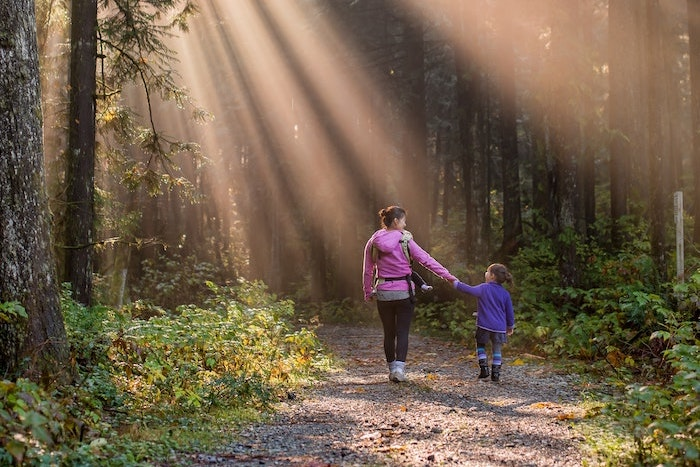

Target Audience
The target audience of the SOAtheory.com web site is described below: Who: Local residents, men & women, of southeast Idaho Age: 18-55 Income: Income levels will typicaly be between $20,000 and above annually. Motivation: Residents looking for what to do locally with their family and friends. People wanting to know local events and important information about their city. Individuals looking wanting to know what the city offers to its residents. Someone looking for a new hobby.
Persona 1
Sally. A mom of two children, ages 3 and 6 months. Shes always looki
Persona 2
Southeast Idaho Local is the place to go when you want to find out what's going on in the area. The website has events. It has fun outdoor activity ideas, including hikes in the area, mountain biking, places to swim, and places to float rivers, etc. The site will have community pages not only talk about events happening, but need to know information for locals, i.e weather, road construction, closures, etc.